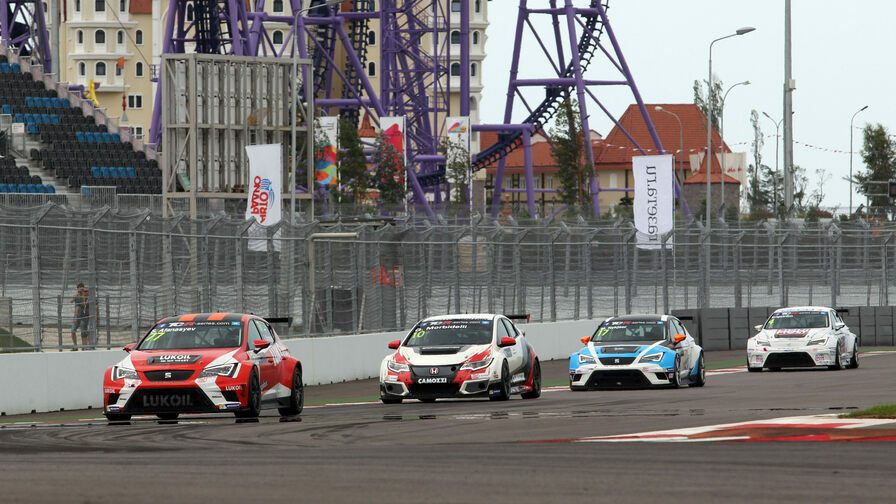
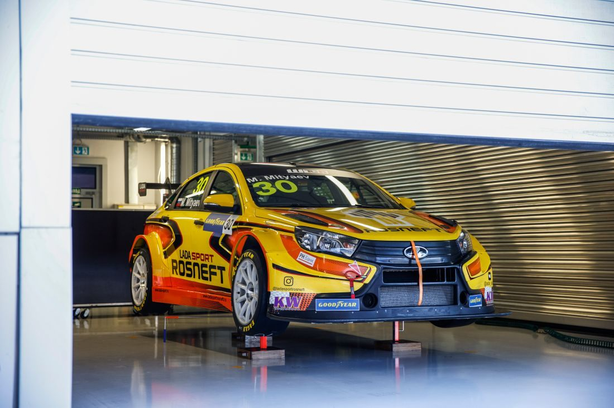
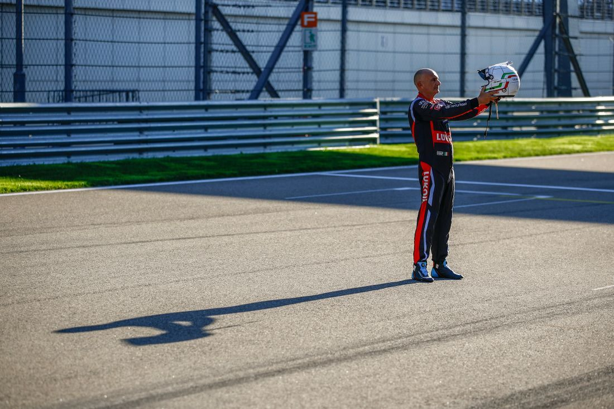

Гранд-финал чемпионата, прощальная гастроль 59-летнего ветерана и дебют российской команды. Рассказываем о главных интригах стартовавшего гоночного уик-энда на Сочи Автодроме...
Не было счастья, да несчастье помогло. Сочи Автодром не присутствовал в первоначальной версии календаря Кубка мира по Турингу, финал должен был состояться в Макао неделей ранее, 19-21 ноября. Да и вообще так вышло, что трасса в Олимпийском парке с 2016 года не принимала международные гоночные соревнования помимо Формулы 1 и её гонок поддержки. Но пандемия коронавируса, как и год назад, внесла свои коррективы в расписание: из-за закрытых границ проведение этапа в КНР оказалось невозможным, и на помощь организаторам WTCR пришла компания «Росгонки», собственник Сочи Автодрома.
«Cитуация в этом быстроменяющемся мире такова, что нужно быть готовым ко всему – в том числе, к потенциальной отмене любого из этапов в связи с эпидемиологической ситуацией. Поэтому перемена места проведения финала – это вопрос вынужденный, но хорошо то, что «Росгонки» зарекомендовали себя для FIA как надежный и проверенный партнер, который, в том числе, и в сложных условиях, какие были в стадии активной пандемии в 2020 году, смог организовать Гран При России Формулы 1 на качественном уровне», - прокомментировал генеральный директор «Росгонок» Алексей Титов.
В 2015-м на Сочи Автодроме уже проходил этап международного первенства по Турингу – TCR. А на Moscow Raceway с 2013-го по 2017-й проводились гонки чемпионата мира WTCC. Так что предстоящий этап в России будет дебютным для платформы WTCR, образованной на базе TCR и WTCC, но никак не для Мирового Туринга в целом.
В общей сложности на старт в воскресенье выйдут 22 гонщика из 13 стран, шести команд и на автомобилях шести марок.
За последние 15 лет в России прошло много международных гоночных соревнований: этап чемпионата Европы по ралли в Выборге, гонки канувшей в лету Мировой серии Renault, немецкой кузовной серии DTM и чемпионата мира по Супербайку на Moscow Raceway, заезды европейского первенства на грузовиках на Смоленском кольце и гонка Формулы E вокруг Кремля. Что говорить про Гран При России Формулы 1. Но ни один из этих этапов не был решающим в борьбе за чемпионство. Так что можно со всей уверенностью сказать, что в эти выходные на Сочи Автодроме состоится знаковое событие для отечественного автоспорта. Впервые в истории на российской трассе определится имя сильнейшего гонщика мира.
Перед финалом Кубка мира по Турингу шансы на чемпионство имеют ни много ни мало шесть гонщиков. Это, конечно, не 18 претендентов на титул, как в Формуле E в июле, но всё равно впечатляет – не каждая гоночная категория может похвастать такой конкуренцией. Итак, после 14-ти прошедших гонок сезона действующий чемпион Ян Эрлашер возглавляет личный зачет с отрывом 36 очков от бельгийца Фредерика Вервиша, который за три года участия в WTCR впервые претендуют на награды чемпионата. В 37 очках от Эрлашера идет вице-чемпион 2019 года Эстебан Геррьери. Далее в чемпионате располагаются напарники лидера общего зачета по Cyan Racing Сантьяго Уррутия (+44 очка) и Иван Мюллер (+50), четырехкратный чемпион Мирового Туринга и дядz Эрлашера. Ну и наконец замыкает шестерку соискателей титула бронзовый призер прошлого сезона Жан-Карл Вернэ. Шесть гонщиков на автомобилях четырех разных марок – Lynk&Co, Audi, Honda и Hyundai. Конечно, у большинства из них лишь математические шансы, поскольку всего будет разыграно 60 очков: по 25 за победу и по 5 за лучшее время в первом и третьем сегментах квалификации.
Так что с одной стороны, Эрлашер в достаточно комфортном положении и может обеспечить себе титул уже в первой гонке уик-энда. Однако проблема в том, что Lynk & Co будет сильно загружен весовым балластом и тяжелее некоторых других автомобилей, причем аж на 60 кг по сравнению Audi RS3 LMS Вервиша. Да и дорожный просвет выше – 80 против 60 мм, что тоже ничего хорошего не сулит. Будет странной, если эта разница окажется решающей в борьбе за титул, но такой уж баланс производительности в WTCR.
Минимальный вес машин в Сочи:
Audi RS 3 LMS TCR: 1265 кг
Cupra Leon Competicion: 1305 кг
Lynk & Co 03 TCR: 1325 кг
Honda Civic Type-R TCR: 1335 кг
Hyundai Elantra N TCR: 1335 кг
Lada Vesta Sport TCR: 1365 кг
Российских участников в Мировом Туринге – как пилотов, так и национальной команды – не было почти так же долго, сколько и самого российского этапа. Гонки главного кузовного первенства планеты в последний раз прошли на Moscow Raceway в 2016-м, и в тот же год Lada Sport свернула проект после четырех лет участия на полном расписании. А последним российском гонщиком в чемпионате до сегодняшнего дня оставался Михаил Козловский, уволенный из команды АвтоВАЗа в середине 2015-го на фоне слабых результатов.
И вот теперь состоялось сразу тройное возвращение, пусть и не в WTCC, в WTCR, но в любом случае в Мировой Туринг. На Сочи Автодроме в качестве приглашенного участника выступит заводская Lada Sport из Российской серии кольцевых гонок, представлять которую будут двукратный и действующий чемпион страны Кирилл Ладыгин и бронзовый призер минувшего сезона Михаил Митяев. Поедут они, как и в РСКГ, на Vesta TCR, для которой это будет дебют в международных соревнованиях.
В общем, зрителям на трибунах и у телеэкранов будет за кого поболеть. Другое дело, что больших свершений, наверное, ждать не стоит. Как участник по уайлд-кард Lada Sport получила весовой балласт машины в 60 кг и 80 мм дорожного просвета. «На Сочи Автодроме лишние 60 кг – это примерно от 0,8 до 1 секунды на круге, – сказал в интервью «Спорт Экспресс» Кирилл Ладыгин. – Трасса очень длинная, и каждый разгон после поворотов будет даваться машине хуже. А от дополнительной высоты пропадает граунд-эффект на прямых, и увеличивается сопротивление воздуха».
Плюс выступать придется не на шинах Yokohama, как в РСКГ, а на Goodyear – пилотам и команде потребуется время на адаптацию, а до квалификации будет всего две тренировки общей протяженностью 1 час и 15 минут. Остается лишь надеяться на знакомство пилотов с трассой и дождь, который поможет нивелировать последствия непомерно высокого BoP. И, кстати, дождь вполне возможен: вероятность осадков в субботу – 80%, в воскресенье – 90%.
Конец 2021 года получается богатым на прощания: из Формулы 1 после 20 лет участия уходит Кими Райкконен, в MotoGP завершил свою карьеру длиною в 25 лет Валентино Росси, в мировом ралли с полного расписания восьмикратный чемпион Себастьен Ожье. Ну а на Сочи Автодроме в эти выходные свой прощальный этап проведет казалось бы никогда не стареющий Габриэле Тарквини.
Вдуматься только: на старт своей первой гонки в Мировом Туринге итальянский пилот вышел в 1987 году, когда многие его нынешние соперники, как Ян Эрлашер, Лукас Энгстлер и Нестор Жиролами, даже не родились, а некоторые, как Жан-Карл Вернэ и Эстебан Геррьери, только появились на свет. Затем были бесславные семь лет в Формуле 1 в командах-однодневках Osella, Coloni, First Racing, Fondmetal, прежде чем Тарквини окончательно связал свою карьеру с гонками кузовных машин.
Не сказать, что Габриэле был таким доминатором в Туринге, какими стали его более младшие коллеги Энди Приоль, Иван Мюллер и Хосе-Мария Лопес, штамповавшие титул за титулом как метрономы. Успешные сезоны чередовались с неудачными, но по разу он стал чемпионом во всех крупных Туринговых первенствах, в которых участвовал – в чемпионате Великобритании в 1993-м, первенстве Европы в 2003-м, чемпионате мира в 2009-м и в Кубке мира в 2018-м. Причем свое последнее чемпионство он завоевал в 56 лет, установив таким образом рекорд для всех гоночных категорий под эгидой FIA.
В своем последнем сезоне Тарквини, конечно, далек от борьбы за титул. Но одну победу, в июле, в Арагоне, он одержал. А в Сочи он поборется за попадание в десятку по итогам чемпионата – сейчас Габриэле 12-й всего в 11 очках от 22-летнего новичка Жиля Магнуса на десятом месте. Неплохо для без пяти минут отставника, которому в марте следующего года стукнет 60 лет.
Гоночный уик-энд пройдет в стандартом для WTCR формате: две тренировки и квалификация в субботу и две гонки в воскресенье. Дистанция первой гонки из девяти кругов составит 52,6 км, вторая будет чуть длиннее – 64,3 км (11 кругов). Оба заезда в прямом эфире на российском ТВ покажет «Матч Арена», также трансляции в России и странах Ближнего зарубежья проведет телеканал Eurosport 2.
27 ноября, суббота
9:30 Первая тренировка
12:30 Вторая тренировка
16:00 Квалификация
28 ноября, воскресенье
12:15 Первая гонка («Матч Арена» и Eurosport 2)
14:15 Вторая гонка («Матч Арена» и Eurosport 2)
Вместимость трибун Сочи Автодрома ограничена до 15% из-за пандемии коронавируса. Ознакомиться с подробным расписанием гоночного уик-энда и приобрести билеты можно на официальном сайте компании-промоутера «Росгонки»